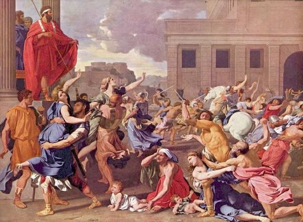

La historia de la Antigua Roma comienza con una leyenda muy importante: la de Rómulo y Remo. Según la tradición, eran hijos del dios Marte y de Rea Silvia, una princesa vestal. El rey Amulio, que temía que los gemelos pudieran reclamar el trono, ordenó que fueran abandonados en el río Tíber. Sin embargo, una loba los encontró y los amamantó, y luego fueron criados por un pastor llamado Fáustulo.
Ya adultos, decidieron fundar una ciudad. Sin embargo, discutieron sobre dónde hacerlo, y Rómulo terminó matando a Remo. Así, el 21 de abril del año 753 a.C., Rómulo fundó la ciudad de Roma sobre el monte Palatino. Se convirtió en su primer rey y organizó las primeras instituciones, como el Senado y la división entre patricios (nobles) y plebeyos (pueblo común).
Durante la etapa monárquica, Roma fue gobernada por una serie de siete reyes, algunos de origen latino, sabino y más tarde etrusco. Cada uno aportó algo importante para el desarrollo de la ciudad. Entre sus logros estuvieron la construcción de acueductos, templos, murallas, el sistema religioso y la organización del ejército.
Uno de los más destacados fue Servio Tulio, quien creó el primer censo de la población y organizó la sociedad en clases sociales según la riqueza. También dividió el territorio en regiones y fortaleció la estructura política de Roma.
El último rey fue Lucio Tarquinio el Soberbio, conocido por su carácter tiránico y su desprecio por las leyes y el Senado. Su gobierno terminó tras una revuelta provocada por un acto de violencia cometido por su hijo, Sexto Tarquinio, contra una noble romana llamada Lucrecia. Su trágico destino provocó la indignación popular.
Como consecuencia, en el año 509 a.C., Tarquinio fue expulsado y con él terminó la monarquía. En su lugar se estableció la República Romana, una forma de gobierno en la que los ciudadanos elegían a sus representantes. Este cambio marcó el inicio de una nueva etapa en la historia de Roma, caracterizada por una mayor participación política de los ciudadanos libres.
